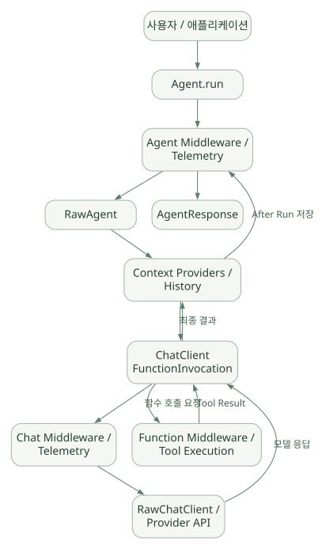

핵심 원리 / 단원 02
run에서 모델·도구를 거쳐 돌아오기
Agent Middleware → RawAgent → Context → ChatClient
먼저 연결해 보기
하나의 agent.run() 안에서도 모델을 여러 번 호출할 수 있습니다. 원문의 Python 구조에서 자동 Tool 반복은 ChatClient의 FunctionInvocation 계층과 연결됩니다.
전체 요청을 감싸는 Agent 계층, 입력을 준비하는 Context 계층, 공급자 API에 연결되는 ChatClient 계층을 따라 읽으세요. 도식은 정상 경로를 단순화하므로 스트리밍·승인·예외 조건은 본문의 제약과 함께 확인해야 합니다.
읽는 관점각 화살표가 입력 준비인지, 모델 요청인지, 실제 도구 실행인지 구분하세요.
6. 가장 중요한 Python 런타임 아키텍처#
공식 Agent Pipeline 문서는 Python Agent를 외부 Agent 래핑 계층과 교체 가능한 ChatClient 계층으로 구분한다. 여기서 특히 중요한 포인트는 모델 호출마다 반복되는 Tool Loop가 반드시 Agent의 최상위 run() 안에 직접 작성된 것은 아니라는 것이다. [D06]
넓은 도식은 가로로 이동하며 읽을 수 있습니다. 도식 크게 보기 ↗

원문에 수록된 학습용 도식입니다. 노드·화살표·분기 라벨을 보존해 다시 배치했습니다. 세부 조건과 예시·구현의 구분은 앞뒤 본문을 함께 읽으세요.
도식 원문 보기 (Mermaid)
flowchart TD
U[사용자 / 애플리케이션] --> A[Agent.run]
A --> AM[Agent Middleware / Telemetry]
AM --> RA[RawAgent]
RA --> CP[Context Providers / History]
CP --> FI[ChatClient FunctionInvocation]
FI --> CM[Chat Middleware / Telemetry]
CM --> RC[RawChatClient / Provider API]
RC -->|모델 응답| FI
FI -->|함수 호출 요청| FM[Function Middleware / Tool Execution]
FM -->|Tool Result| FI
FI -->|최종 결과| CP
CP -->|After Run 저장| AM
AM --> O[AgentResponse]위 그림은 공식 설명을 학습용으로 단순화한 것이다. 실제 Streaming·승인·게이트·예외 경로는 더 복잡하다.
6.1 각 레이어의 구체적인 책임#
- Agent Middleware: 호출 제한, 사용자 식별·요청 검사, 로깅, 실행 결과 변경 등 Agent 전체 요청을 감싼다.
- RawAgent: 입력과 세션을 바탕으로 Context Provider를 호출하고 ChatClient 실행으로 연결한다.
- History / Context Provider: 이전 메시지, 검색 결과, 기억, 런타임 도구·옵션 등을 준비한다.
- FunctionInvocation: ChatClient가 모델 응답을 받으면 Tool 호출 요청을 해석하고 실행·결과 추가·재호출을 수행한다.
- Chat Middleware: 모델 요청 단위로 정책·로그·검증 등을 개입시킨다.
- RawChatClient: 실제 공급자 API 호출과 응답 형식 변환을 담당한다.
- 후처리/저장: History Provider와 Context Provider가 실행 결과에 따라 상태를 업데이트할 수 있다.
설계 시사점: 모델 요청에만 적용하려는 정책을 Agent Middleware에 등록하면 원하는 만큼 세분화되지 않을 수 있다. '원문이 외부로 나가기 전' 통제는 Chat 단계, '실제 SQL 실행 전' 통제는 Function Tool/실행 인가 계층에 두는 것이 더 명확하다.
7. Agent.run() 호출부터 종료까지#
가장 쉬운 입력/출력 경로는 다음과 같다.
1) app: Agent.run(user_message, session=...)
2) Agent Middleware가 진입 (요청 전체 트레이싱/검사)
3) History Provider가 현재 세션의 과거 대화를 로드
4) Context Providers가 메모리·RAG·도구·옵션을 보강
5) ChatClient/FunctionInvocation이 모델을 호출
6a) 도구 요청 없음 → 답변 반환
6b) 도구 요청 있음 → Tool 검사·실행 → Tool 결과 추가 → 모델 재호출
7) 필요한 후처리·이력 저장
8) Agent Middleware가 결과 반환
9) AgentResponse 전달Agent Loop 안에서 종료 조건은?#
- 모델이 최종 텍스트/구조화 결과를 반환하고 더 실행할 Tool 호출이 없으면 Tool Loop가 종료될 수 있다.
- 요청 및 Tool 호출 횟수 상한, 정책, 취소, 승인 요청, 예외는 별도 중단 경로다.
- 모델이 계속 Tool을 요구하는 상황에 대한 최대 호출 수·실행 시간·토큰 제한을 애플리케이션 정책으로 설정해야 한다.
- '모델이 질문에 답했지만 검토 결과 미완료'일 경우, 별도
AgentLoopMiddleware가 Agent 전체를 재실행하는 패턴을 사용할 수 있다. [D06][S07]
시퀀스 다이어그램#
| 순서 | 호출자 → 수신자 | 전달 내용 |
|---|---|---|
| 1 | App → Agent | run(prompt, session) |
| 2 | Agent → Context/History | before_run / load history |
| 3 | Context/History → Agent | context/messages |
| 4 | Agent → FunctionInvocation | get_response(messages, tools) |
| 5 | FunctionInvocation → LLM Provider | request |
| 6 | LLM Provider → FunctionInvocation | tool_call |
| 7 | FunctionInvocation → Tool | validate/execute |
| 8 | Tool → FunctionInvocation | result |
| 9 | FunctionInvocation → LLM Provider | request + tool result |
| 10 | LLM Provider → FunctionInvocation | final answer |
| 11 | FunctionInvocation → Agent | ChatResponse |
| 12 | Agent → Context/History | after_run / persist |
| 13 | Agent → App | AgentResponse |
원문에 수록된 학습용 도식입니다. 호출 순서와 반복·분기 조건을 표 형태의 순서도로 보존했습니다. 세부 조건과 예시·구현의 구분은 앞뒤 본문을 함께 읽으세요.
도식 원문 보기 (Mermaid)
sequenceDiagram
participant U as App
participant A as Agent
participant C as Context/History
participant F as FunctionInvocation
participant M as LLM Provider
participant T as Tool
U->>A: run(prompt, session)
A->>C: before_run / load history
C-->>A: context/messages
A->>F: get_response(messages, tools)
F->>M: request
M-->>F: tool_call
F->>T: validate/execute
T-->>F: result
F->>M: request + tool result
M-->>F: final answer
F-->>A: ChatResponse
A->>C: after_run / persist
A-->>U: AgentResponse중요: 위 도식은 정상적인 단일 Tool 호출을 나타낸다. 여러 Tool 병렬 호출, 승인 중단, Streaming, Hosted Tool은 별도 분기로 취급해야 한다.